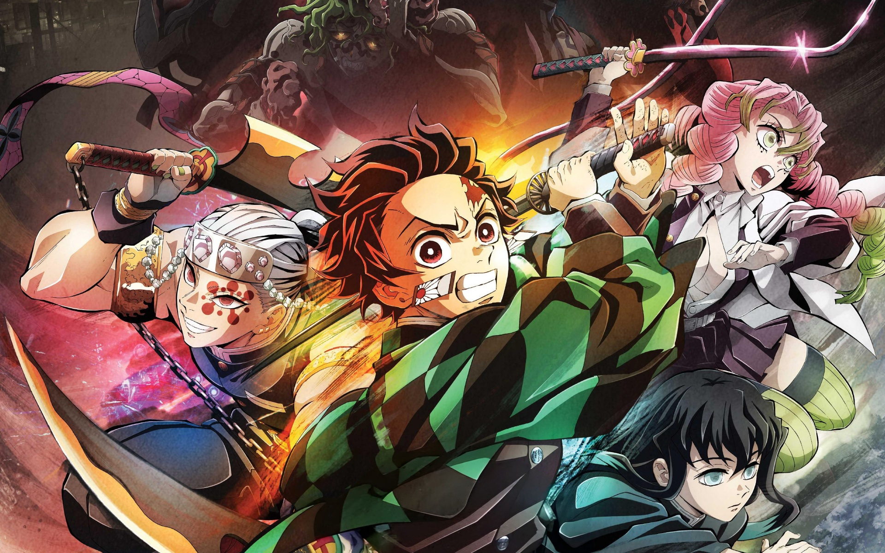

Demon Slayer – Le Château de l’Infini
Saison 1
Saison 2
Saison 3
Saison 4
Film – Le Château de l’Infini
Plonge dans la conclusion épique de Demon Slayer : la bataille finale au cœur du Château de l’Infini. Tanjirō, Nezuko et les piliers affrontent Muzan dans un combat titanesque pour l’humanité.

üé¨ Film ‚Äì Le Ch√¢teau de l‚ÄôInfini